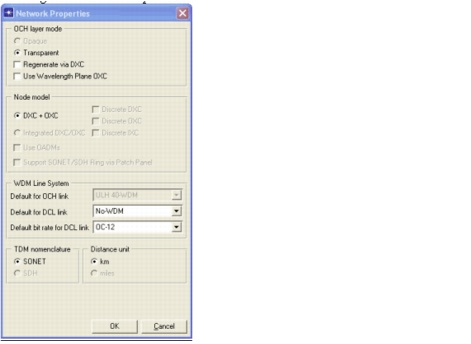
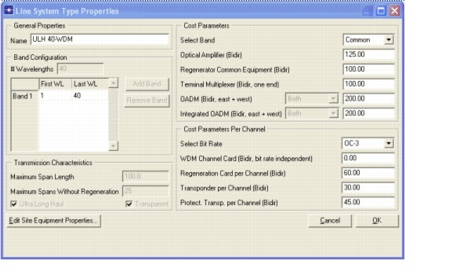
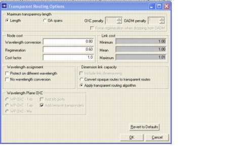
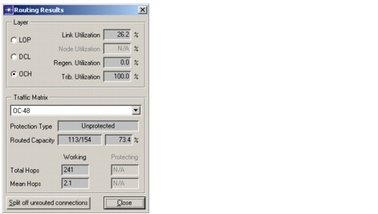
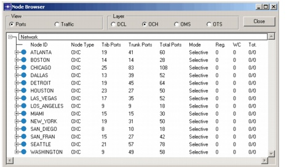
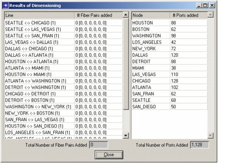
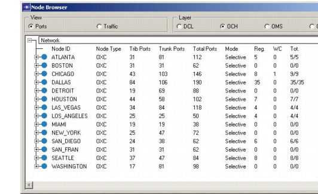
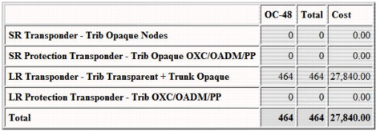
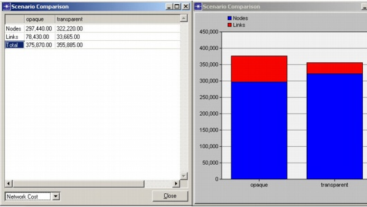

Optical Network Architectures > Transparent Mode
Transparent Mode
Procedure 5-2 Transparent Mode
- Switch to the transparent scenario.
- Select Scenarios > Switch To Scenario > transparent.
- Select Network > Network Properties....
The OCH layer mode is transparent in this scenario. The ULH-40 WDM system has been selected as the default WDM line system, which means all lit fibers pairs are equipped which such a line system.
- Press Cancel to close the Network Properties dialog box.

- Inspect the properties of the ULH 40-WDM line system type.
- Select Network > Equipment Properties > WDM Link Equipment....
- Select the ULH 40-WDM line system type, then press Edit LS Type.
The Line System Type Properties dialog box appears.
This dialog box displays the properties of the ULH 40-WDM line system type.
The Maximum Span Length is 100 kilometers and the Maximum Spans Without Regeneration is 25 span units. This implies that the maximum transparency length of this line system is 2500 kilometers.

- Close the Line System Type Properties and the WDM Link Equipment dialog boxes.
- Route the traffic matrix OC-48.
- Select Design > Route DCL/OCH Traffic.... In transparent mode, routing a traffic matrix implies that no link equipment is being added to the network (as in the opaque mode) and no regeneration capacity is being added to the nodes. So we try to establish as much traffic as possible within the existing link capacity and the existing in-node regeneration capacity. In this example, the node limitations do not come into play because we are using continuous node models.
- Select the OCH Layer and the traffic matrix OC-48.
- Choose the default settings for all options:
- Press the Transparent Routing Options button.
The Transparent Routing Options dialog box appears.
This dialog box lets you specify some extra settings for the transparent mode. For example, the cost model for wavelength conversion and regeneration can be specified here. Refer to the SP Guru Transport Planner User Manual for more details on this cost model.
- Select Apply Transparent Routing Algorithm (under Dimension Link Capacity).

- Press OK to close the Transparent Routing Options dialog box.
- Press Route in the Route DCL/OCH Traffic dialog box.
The Routing Results dialog box appears.
Routing Results indicates that only 73.4% of the traffic matrix OC-48 could be accommodated in the network. The unrouted traffic is caused by the fact that certain paths exceed the transparency reach (i.e. 2500 km) and no regeneration capacity is present in the network to solve this. Note that there is enough link capacity provided in the network: the link equipment utilization only amounts to 26%.

- Close the Routing Results and the Route DCL/OCH Traffic dialog boxes.
- Select the Network > Node Browser and expand the network node. All nodes are selective, but none of the nodes perform regeneration or wavelength conversion.

- Close the node browser.
Tear down the traffic matrix.
- Select Design > Tear Down Traffic....
- Select the OCH Layer and the traffic matrix OC-48, then press Tear Down.
The OCH traffic matrix is released from the network.
- Close the Tear Down Traffic dialog box.
Dimension the OCH layer.
- Select the Design > Dimension DCL/OCH Layer.... In transparent mode, dimensioning the OCH layer provides regeneration capacity in the selective nodes needed to try to accommodate the traffic matrix entirely in the network.
- Select the traffic matrix OC-48 and choose the following:
- Press Transparent Routing Options.
- Uncheck Include Link Dimensioning in the Transparent Routing Options dialog box. This implies that no extra link equipment will be added to the network.
- Press OK.
- Press Dimension in the Dimension OCH/DCL Layer dialog box.
The Results of Dimensioning dialog box appears.
No fiber pairs have been added to the network (as expected), but there has been capacity added to the nodes.

- Close the Results of Dimensioning and the Dimension OCH/DCL Layer dialog boxes.
- Open the Design > Routing Results dialog box. The traffic matrix OC-48 is entirely accommodated in the network. The utilization of the in-node regeneration capacity amounts to 100 percent. This means that only the necessary regeneration capacity has been added to the selective nodes.
- Close the dialog box.
- Select the Network > Node Browser. Regeneration capacity has been added to some nodes. For example, in node DALLAS 35 regenerations are needed.

- Close the node browser.
Check the installed transponders in the network.
- Select Info > Export to Web Report > Bill of Materials.
The web browser is launched and the bill of materials report appears.
- Select Transponder. In selective nodes, only long-reach transponders are installed. These are located at the tributary side of the OXC, to steer the channel into the network, and at the regeneration bank to regenerate pass-through traffic in the intermediate nodes. In this example, 464 long-reach transponders have been installed in the network compared to 820 long-reach transponders in opaque mode.

- Close the Bill of Materials file.
Compare the opaque and the transparent network design scenarios.
- Select Scenarios > Compare Scenarios. These dialog boxes allow you to compare the two different network design scenarios.
- Select Network Cost in the lower left corner of the tabular dialog box. Note the large difference in node and link cost for both designs. The link cost in the opaque scenario is high due to the long-reach transponders present in the DWDM terminals. In the transparent scenario, the long-reach transponders are installed at the tributary site of the OXCs, which results in a higher node cost and in a much lower link cost. In this example with these cost settings, the transparent scenario has a lower overall network cost.

Close the dialog boxes. Close the project.
- Select File > Close.
- Select Don't Save in the Close Confirm dialog box.
End of Procedure 5-2
| Home © 1987-2007 OPNET Technologies, Inc. All Rights Reserved. This software may be covered by one or more U.S. Patents. See complete patent notice in the Legal Notices section. OPNET Support Center |